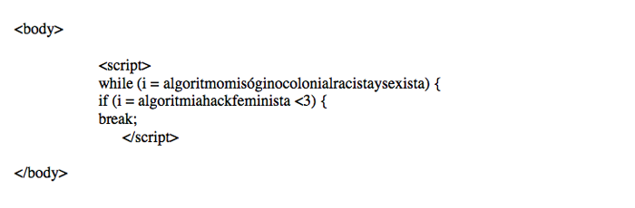
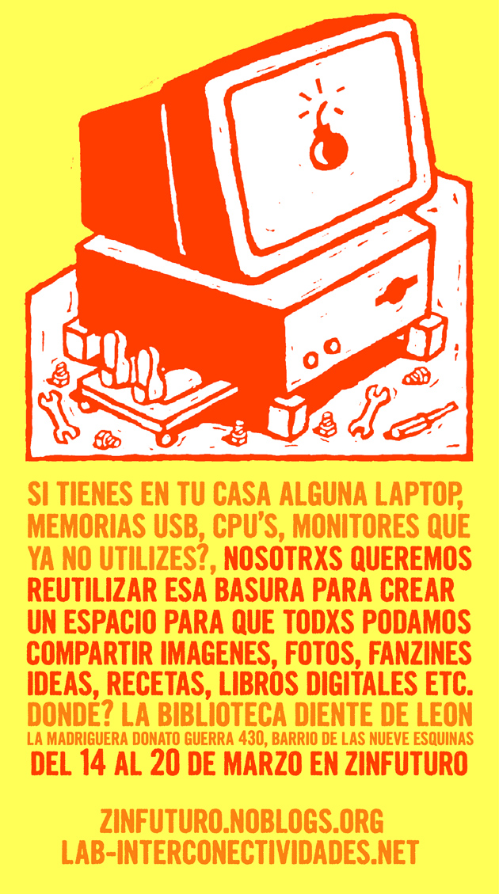
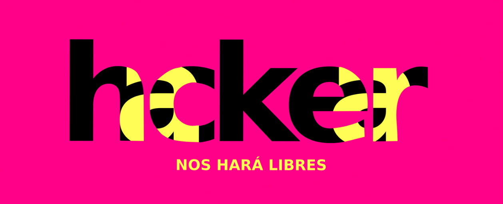
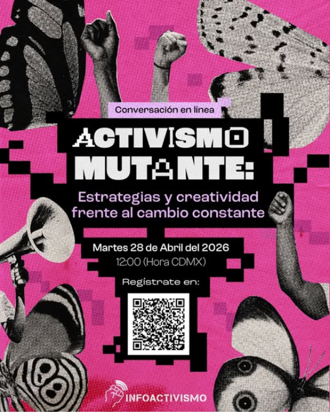

04
Sección
Análisis de imagen y
repertorios simbólicos

clic para ampliar111.png
Se aprecia un bloque de código de programación (similar a JavaScript) con un bucle while que atrapa a la variable algoritmomisóginocolonialracistaysexista y una condición if que al cumplirse con algoritmiahackfeminista <3 ejecuta la orden break;.
Se denuncia que los algoritmos actuales no son neutrales, sino que reproducen lógicas de opresión: misoginia, colonialismo, racismo y sexismo. Como menciona Jesús Martín-Barbero (2009), "la tecnología remite hoy —tanto o más que a unos nuevos aparatos— a nuevos modos de percepción y de lenguaje."
El bucle while sin una salida lógica interna simboliza cómo los sistemas algorítmicos hegemónicos atrapan y perpetúan la opresión de manera infinita. La única forma de romper (break) ese sistema no proviene de una corrección técnica dentro de la misma lógica opresiva, sino de la activación de un algoritmiahackfeminista que introduce un valor no computable para el sistema dominante: el afecto (<3). Siguiendo a Rancière, disputa el "reparto de lo sensible" que excluye ese cuidado del profesionalismo tecnológico. El uso de código de manera ligera y tierna es en sí mismo una invitación a programar.
Hablan Liliana Zaragoza Cano (Lili_Anaz) y Anna Akhmatova. La primera es comunicóloga, y artista hackfeminista. La segunda creció en IRC y en la comunidad Linux, y es coautora de Safer Nudes! y Chupadatos en Coding Rights. Ambas hablan desde una posición en que la programación es una herramienta de liberación contemporánea.

clic para ampliar222.jpg
Se aprecia un cartel con colores amarillo y naranja intensos, que atraen la atención y evocan energía. Aparece la imagen central de un monitor que tiene en su interior una bomba y debajo a una persona recuperándola con diversas herramientas a su alrededor. El texto pregunta: "SI TIENES EN TU CASA ALGUNA LAPTOP, MEMORIAS USB, CPU'S, MONITORES QUE YA NO UTILIZES?" Luego propone: "NOSOTRXS QUEREMOS REUTILIZAR ESA BASURA PARA CREAR UN ESPACIO PARA QUE TODXS PODAMOS COMPARTIR IMAGENES, FOTOS, FANZINES, IDEAS, RECETAS, LIBROS DIGITALES ETC." Se indica un lugar, una dirección, un rango de fechas y el evento "ZINFUTURO". Abajo aparecen dos sitios web.
Se denuncia que los dispositivos electrónicos en desuso son tratados como "basura" cuando aún pueden ser reutilizados. Se propone recuperarlos para transformarlos en infraestructura comunitaria de intercambio cultural autogestivo fuera de los circuitos de producción en masa.
La bomba de dinamita dentro de la computadora alude a la obsolescencia programada: así como a las bombas se les prende el mechero y es solo cuestión de tiempo para que exploten, los dispositivos electrónicos vienen diseñados de fábrica para volverse inservibles en un tiempo calculado y que así sigamos consumiendo productos. Los colores amarillo y naranja intensos remiten al peligro, pero también a una decisión estético-política. Mientras el canon profesional asocia lo "serio" a tonos sobrios, las hackfeministas eligen lo llamativo, lo chillante, lo saturado, para disputar lo que se considera legítimo y visible. Por último, la palabra "basura" se resignifica como materia prima para la creación colectiva, el lenguaje inclusivo ("NOSOTRXS", "TODXS") descentraliza a los hombres de las prácticas de resistencia, y la invitación a compartir "recetas e ideas" fusiona lo tecnológico con lo doméstico y lo afectivo.
Habla el Laboratorio de Interconectividades, un proyecto gestionado por Lili Anaz (Liliana Zaragoza Cano) desde una posición de soberanía tecnológica.

clic para ampliar333.png
Se aprecia un texto negro con amarillo intenso, sobre fondo rosa igualmente intenso. Este texto está superpuesto a manera que se lee "hcker" y "hackear" y debajo "NOS HARÁ LIBRES".
La frase completa evoca la máxima "hackear nos hará libres", que disputa la promesa tecnológica privatizada y elitista de que "el progreso" (siempre por venir, siempre en el siguiente dispositivo, actualización o innovación) terminará por liberarnos, aunque en realidad nos mantiene atrapados en una aspiración infinita de consumo. Siguiendo a Rancière, la política auténtica ocurre cuando aquellos que no tienen parte (los excluidos, los invisibilizados) irrumpen y demuestran que pueden actuar; en este caso las mujeres: hackear.
La frase recuerda que hackear es criminalizado solamente porque no es conveniente para las empresas tecnológicas y que, por tanto, no es una habilidad técnica neutral, sino una práctica de liberación. Cuando el hackfeminismo dice "hackear", no está usando la palabra como la usa un corporativo o un delincuente informático. Hay un desacuerdo radical —mésentente— sobre lo que significa (Rancière).
Habla Irene Soria, desde su página web, donde todos sus artículos mantienen esta misma estética y paleta de colores. Ella es una reconocida académica hackfeminista mexicana, presidenta de la asamblea de asociadas de Luchadoras y su tesis doctoral se titula "En busca de las hacker: mujeres con prácticas computacionales especializadas".

clic para ampliar444.PNG
Se aprecia un póster digital con una paleta de colores dominada por un rosa intenso y salpicado con elementos de collage. Sobre este fondo, figuras humanas estilizadas: puños en alto y brazos sosteniendo un megáfono, que se mezclan con imágenes de alas de mariposa en blanco y negro de gran tamaño. El título "ACTIVISMO MUTANTE" aparece en letras grandes y pixeladas, dominando la parte superior central. Debajo, el subtítulo "Estrategias y creatividad frente al cambio constante". La información práctica es clara: "Martes 28 de Abril del 2026", "12:00 (Hora CDMX)". Un código QR prominente facilita el registro, y en la parte inferior izquierda aparece el logo "INFOACTIVISMO".
Se convoca a una conversación en línea dirigida a personas que desarrollan estrategias en redes sociales desde el activismo, el feminismo, la diversidad y la defensa de derechos digitales. Se parte de la premisa de que el contexto cambia constantemente y las estrategias tradicionales (planeadas, rígidas) pueden no ser suficientes. Se propone explorar estrategias emergentes como respuesta a problemas que se reciclan sin que el contexto cambie de fondo.
El collage como técnica visual fue una práctica central en el feminismo y otros movimientos sociales o subculturas de los años 70 y 80. El hackfeminismo la recupera: los puños en alto remiten a la lucha organizada y la solidaridad; las alas de mariposa en blanco y negro evocan la metamorfosis (mutación). La tipografía pixelada remite a lo digital y lo no pulido. Se disputa la idea de que una estrategia fija planeada es siempre la más efectiva, y que el activismo mutante es el que aprende a improvisar, adaptarse y mutar. Así, se sitúan en la tradición del activismo de derechos digitales, con un pie en la calle (los puños, el megáfono) y otro en la pantalla (el QR, los píxeles). Como propone Martín-Barbero (2009), acabamos "desterritorializando las formas de percibir lo próximo y lo lejano hasta tornar más cercano lo vivido 'a distancia', virtualmente, que lo que cruza nuestro espacio físico cotidianamente".
Habla SocialTIC, organización dedicada al uso de tecnologías para el activismo y los derechos digitales. El evento forma parte de INFOACTIVISMO, una rama que vincula información, tecnología y acción política. Enuncian desde una posición horizontal y de co-aprendizaje (no desde la experticia distante), invitando a "traer tus dudas y resolverlas juntes".
05
Sección
Política literal y política literaria:
imaginación y desidentificación
Ficción política
El sentido común dominante dibuja al hacker como figura masculina, asocial, mística y solitaria: un genio anónimo detrás de su escritorio. El hackfeminismo mexicano desarticula esa imagen a través de la ficción política: no representa algo que ya existe, sino que hace existir lo que el poder declara imposible. Por eso, para el poder y el sentido común, la ficción política siempre parece sospechosa, pues agrupa a tantas personas que no es fácil trazar quiénes son exactamente los responsables de ese cambio al que quieren resistirse.
"En la cultura hacker tenemos mucho esta cosa de no decirte hacker a ti misma, sino esperar a que alguien más te diga hacker. Pero después de mi investigación doctoral me di cuenta que en el caso de las mujeres y las disidencias sexuales, pues es muy importante nombrarse."
Irene Soria — investigadora y hackfeminista mexicana
Nombre colectivo
El movimiento crea un nombre colectivo que no pide acreditación. Llamarse "hackfeminista" no exige un título en ciencias computacionales ni la validación de la comunidad patriarcal. Es un acto que abre un territorio común; como explica Fernández Savater, el poder nombra para separar, clasificar y estigmatizar; la imaginación política responde con un nombre vacío donde cabe cualquiera que quiera.
Comunidad sensible
Este territorio común es habitado por una comunidad sensible: personas que comparten una inquietud y, en este caso, la convicción de que explorar, reapropiar y resistir tecnológicamente es ya una forma de hackeo. El mero uso de Linux frente a Windows, de Firefox frente a Google: el hackeo viene más bien de exploraciones tecnológicas, no de un estereotipo de genio solitario.
Brecha STEM
En México, la participación femenina en carreras STEM no es baja por "falta de interés", sino por borradura histórica: la ausencia de modelos a seguir durante la infancia dificulta la proyección de vida de las mujeres en esas áreas. El hackfeminismo no espera a que el sistema educativo incluya a las mujeres; las incluye por su cuenta, bajo un nombre colectivo. La ficción política del hackfeminismo suple esa falta: amplía lo que puede ser una hacker.
06
Sección
Crisis de la verdad
y contranarrativas
Marco teórico
Sophia Rosenfeld
La confianza pública es la creencia compartida de que existen instituciones —periódicos, universidades, agencias gubernamentales— capaces de ofrecer información veraz y legítima. Rosenfeld señala que esta confianza se ha erosionado profundamente. Sin embargo, no ha desaparecido: se transfirió a los algoritmos y las grandes corporaciones tecnológicas. Cedemos nuestros datos sin leer los términos y condiciones porque se nos orilla a actualizarnos constantemente bajo ellos. El algoritmo es una especie de "confianza" depositada en una caja negra que no entendemos.
En tecnología, esto significa que quienes programan se enajenan de que esa tecnología es empleada por usuarios cuyas necesidades y estilos de vida deberían tomar en cuenta. Esa parte ética y social la arrumban.
El hackfeminismo disputa el monopolio del conocimiento especializado y combate la tecnocracia: ese régimen que pretende que solo los expertos decidan y que el resto solo obedezca. El hackfeminismo exige que no solo los expertos decidan, sino que todos podamos comprender lo que ocurre, sobre todo mujeres que ya tienen una desventaja histórica en ese campo.
Marco teórico
Rebecca Solnit
Solnit habla de relatos que construyen "catedrales invisibles" y ordenan nuestra experiencia. Nos habituamos a ellos hasta darlos por verdades eternas, fijas e incuestionables. En tecnología, el relato dominante es uno de categorías cerradas: "es demasiado complejo", "solo los genios lo entienden", "es peligroso meter las manos". Esa barrera, esa opacidad de no saber cómo funciona, es algo normal cuando intentas entender la tecnología, incluso para los hombres. Pero ese relato nos paraliza.
Frente a esto, Solnit propone la esperanza. No como certeza optimista de que todo saldrá bien, ni como predicción del futuro. La esperanza es más bien ver lo que ya se ha logrado en el pasado —cambios reales, victorias colectivas— y, a partir de ahí, actuar sin saber exactamente qué pasará. La imaginación de lo posible consiste en abrirse a alternativas, moverse con flexibilidad y rechazar tanto el pesimismo paralizante como el optimismo ingenuo.
Su método está en el lema zapatista "caminando preguntamos": no hace falta tener todas las respuestas para empezar. No se necesita ser experta en ciberseguridad para luchar contra el acoso digital o para instalar un software libre. Se aprende hackeando. La contranarrativa se construye en el proceso.
Síntesis
La confianza pública está secuestrada por la tecnocracia; el conocimiento especializado se ha vuelto opaco y excluyente; cedemos nuestros datos sin comprender a quién se los damos.
Romper los relatos de las categorías cerradas que reservan la tecnología a los expertos; activar la esperanza como práctica colectiva; caminar preguntando.
Desconfía del algoritmo como caja negra, pero confía en la inteligencia colectiva; no espera permiso de los expertos para nombrarse y actuar.
Reflexión final
Hackear
como acto
político
Las tecnologías del poder operan con mayor eficiencia entre más vulnerable sea el sector social al que se dirigen. Por eso no basta con evidenciar las violencias que ejercen los avances tecnológicos que pertenecen solo a unos cuantos y que solo unos cuantos comprenden.
El hackfeminismo atraviesa varias fisuras en esa lógica. Permite transformar, reescribir y programar otra realidad posible: una en la que no sea normal que la figura del gamer, del ingeniero en sistemas, o simplemente del chico que se encarga de que la presentación se proyecte bien, sea siempre un hombre. Ellos acaparan la conversación tecnológica y, desde su posición, han demostrado una incapacidad inherente en reconocer que hay un problema con eso. Es fácil decir que las mujeres también pueden, que nadie lo niega — pero por algo no ocurre, y ese algo debe nombrarse: lógica patriarcal y colonial.
El hackfeminismo no atiende nuevas problemáticas, pero retoma las que ya existían — la desaparición forzada, el acoso digital, la exclusión de habilidades TIC — y las reencuadra desde el mundo del hackeo, o más bien, desde lo que las propias colectivas han expandido dentro de ese término. Hackear, para ellas, no es un delito ni una habilidad imposible. Es un acto político de reapropiación, y una necesidad en estos tiempos.
07
Bibliografía
Referencias
Bravo Regidor, C. (2025). 5. Sophia Rosenfeld. ¿Crisis de la verdad? En Mar de dudas (pp. 115-134). Libros grano de sal.
Bravo Regidor, C. (2025). Rebeca Solnit | Cambiar los relatos, relatar el cambio. En Mar de dudas (pp. 165-188). Libros grano de sal.
Deleuze, G. (2006). Post-scriptum a las sociedades de control. Polis, (13). Publicado el 14 agosto 2012, consultado el 07 agosto 2019. http://journals.openedition.org/polis/5509
Emmelheinz, I. (2016). Subjetivación y gubernamentalidad. En La tiranía del sentido común. La reconversión neoliberal de México (pp. 89-118). Paradiso Editores.
Fernández-Savater, A. (2014). Política literal y política literaria. El Diario España. https://www.eldiario.es/interferencias/ficcion-politica-15-m_132_5503295.html
Foucault, M. (2001). Clase del 17 de marzo de 1976. En Defender la sociedad (pp. 217-237). Fondo de Cultura Económica.
HackFem AI. (s.f.). Canal de HackFem AI [Channel de YouTube]. YouTube. Recuperado el 11 de mayo de 2026, de https://youtube.com/@hackfemai
Latour, B. (2008). Primera fuente de incertidumbre: no hay grupos, solo formación de grupos. En Reensamblar lo social. Una introducción a la teoría del actor-red (pp. 47-65).
Martín-Barbero, J. (2010). Mutaciones culturales y estéticas de la política. Revista de Estudios Sociales, (35), 15-25. http://www.scielo.org.co/pdf/res/n35/n35a03.pdf
Melucci, A. (2009). Las teorías de los movimientos sociales. Estudios Políticos, 5(2). (Trabajo original publicado en 1975). https://www.revistas.unam.mx/index.php/rep/article/view/60047
Ramírez Muñoz, D. A. (2022). Hackfeminismo: una mirada desde México. Centro de Investigaciones y Estudios de Género, Universidad Nacional Autónoma de México. https://doi.org/10.22201/cieg.9786073068298e.2022
Créditos
Melissa Vázquez Chávez
Estudiante de la Licenciatura en Arte y Creación
ITESO
Ana Sofía Oceguera Cervantes
Estudiante de la Licenciatura en Ciencias de la Comunicación
ITESO